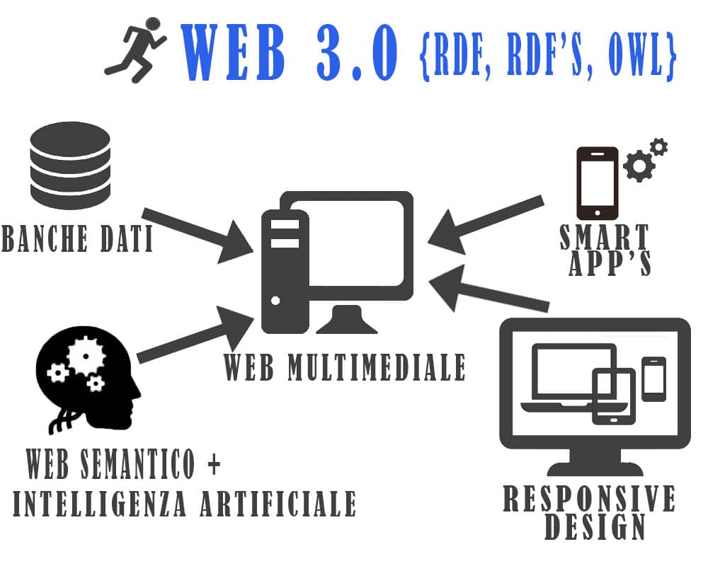
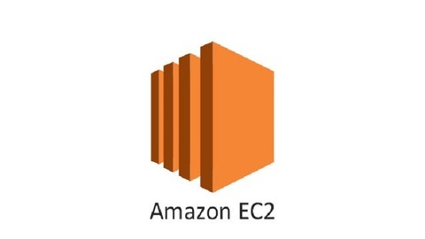

Web 1.0 se refiere a un estado de la World Wide Web. Es en general un término usado para describir la Web antes del impacto de la «fiebre punto com» en el 2001, que es visto por muchos como el momento en que el internet dio un giro.
Surgen los documentos descriptivos XML y RDF .
El 15 de enero del año 2001 se creó la mayor enciclopedia virtual. El nombre Wikipedia surgió como contracción de los términos wiki (en alusión a la tecnología que le dio carta de naturaleza y que, a su vez, procede del hawaiano wikiwiki, rápido) y encyclopaedia. Aunque sus contenidos son frecuentemente objeto de discusión, Wikipedia es uno de los recursos informativos más usados en nuestros días.
En el año 2004 se lanza el sitio web de Facebook, pero la historia de Facebook comienza en octubre de 2003, cuando a Mark Zuckerberg se le ocurre crear una web para entretener a sus compañeros de Harvard. El sitio se llamaba Facemash y servía para que los estudiantes pudiesen juzgar el atractivo de otros estudiantes y hacer rankings.
A pesar de que el término «Ajax» fue creado en 2005 por Jesse James Garrett, la historia de las tecnologías que permiten Ajax se remonta a una década antes con la iniciativa de Microsoft en el desarrollo de Scripting Remoto.
Jeffrey Zeldman usa el término Web 3.0. Web 3.0 o web semántica es una expresión que se utiliza para describir la evolución del uso y la interacción de las personas en internet a través de diferentes formas entre las que se incluyen la transformación de la red en una base de datos, un movimiento social con el objetivo de crear contenidos accesibles por múltiples aplicaciones non-browser (sin navegador), el empuje de las tecnologías, de inteligencia artificial, la web semántica, la Web Geoespacial o la Web 3D.

Se lanza la beta de Amazon Elastic Compute Cloud (EC2), éste es una parte central de la plataforma de cómputo en la nube de la empresa Amazon.com denominada Amazon Web Services (AWS). EC2 permite a los usuarios alquilar computadores virtuales en los cuales pueden ejecutar sus propias aplicaciones.
